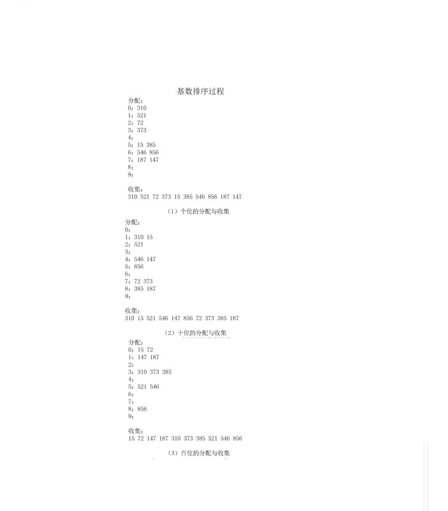

排序算法，是将无序数据变为有序的一种算法。通常分为内部排序和外部排序。内部排序是指所有待排序的数据都在内存中，都可以直接访问得到。 外部排序是指数据存储在外部，通常都涉及大量的数据的排序问题，这里我们先不讨论。本文主要介绍主要的内部排序算法。
内部排序按照算法思想的不同，可以分为以下几种类型：
- 插入排序
- 选择排序
- 交换排序
- 归并排序
- 基数排序
比较排序
如果排序算法中元素的顺序的确定依赖元素之间的比较，那么这类排序算法称作比较排序。
插入排序
插入排序的思想是将一个元素插入到一个已经排序好的序列中，在插入的时候逐个比较带插入元素和有序的序列，找到新插入元素的合适位置，插入到序列中。
直接插入排序
最简单的插入排序，直接使用插入排序的思想而没有经过任何的优化过程。
1
2
3
4
5
6
7
8
9
10
11
12
13
14
15
16
17
18
19
20
21
22
23
24
25
26
27
28
29
30
31
32
33
34
35
36
37
38
39
40
41
42
43
44
45
46
47
48
49
50
51
52
53
54
55
56
57
using namespace std;
void print(vector<int> v,int i){
int count = 0;
for(auto a : v){
if(count == i){
cout<<" : ";
}
cout<<a<<" ";
count ++;
}
cout<<endl;
}
vector<int> SimpleInsertSort(vector<int> &a)
{
int n = a.size();
// 每次循环，都假设i前面的数字已经排序好了，i是要插入到已排序序列的数字，i之后的数字都是未排序的。
for(int i = 1; i<n; i++){
// 打印当前的状态
print(a,i);
// 找到当前数字i应当插入的位置
int curValue = a[i];
int ii = i;
if(a[ii]<a[0]){
//应当插入首位
while(ii-1>=0){
a[ii] = a[ii-1];
ii--;
}
a[0] = curValue;
}else if(a[ii]>=a[ii-1]){
//应当插入末尾
continue; //如果应该插入的位置是有序列表的末尾，则什么都不用做。
}else{
for(int j=0;j<ii-1;j++){
if(a[ii]>=a[j] && a[ii]<a[j+1]){
//应当插入j之后
while(ii-1>j){
a[ii] = a[ii-1];
ii--;
}
a[ii] = curValue;
}
}
}
}
print(a,a.size());
return a;
}
int main() {
vector<int> v = {49,38,65,97,76,13,27,49};
auto re = SimpleInsertSort(v);
return 0;
}
运行结果：1
2
3
4
5
6
7
849 : 38 65 97 76 13 27 49
38 49 : 65 97 76 13 27 49
38 49 65 : 97 76 13 27 49
38 49 65 97 : 76 13 27 49
38 49 65 76 97 : 13 27 49
13 38 49 65 76 97 : 27 49
13 27 38 49 65 76 97 : 49
13 27 38 49 49 65 76 97
简单插入排序的时间复杂度是o(n^2);
折半插入排序(二分插入排序)
简单插入排序没有经过任何的过程优化，我们仔细分析简单插入排序的过程，寻找元素应该插入的位置这一过程是可以优化的。因为是在有序序列中查找，所以可以使用二分查找方法缩短查找的时间。该方法被叫做二分插入排序。
STL中lower_bound(a.begin(),a.end()+ii,a[i]);实现了二分查找算法，我们直接使用它替换原来的循环语句查找出插入位置即可。1
2
3
4
5
6
7
8
9
10
11
12
13
14
15
16
17
18
19//使用二分查找方法搜索应该插入的位置，此方法叫做二分插入排序
// for(int j=0;j<ii-1;j++){
// if(a[ii]>=a[j] && a[ii]<a[j+1]){
// //应当插入j之后
// while(ii-1>j){
// a[ii] = a[ii-1];
// ii--;
// }
// a[ii] = curValue;
// }
// }
auto index = lower_bound(a.begin(),a.begin()+ii,a[ii]);
//应当插入j之后的位置
int j = distance(a.begin(),index)-1;
while(ii-1>j){
a[ii] = a[ii-1];
ii--;
}
a[ii] = curValue;
二路插入排序
缩小增量排序（希尔排序）
简单选择排序
在要排序的一组数中，选出最小（或者最大）的一个数与第1个位置的数交换；然后在剩下的数当中再找最小（或者最大）的与第2个位置的数交换，依次类推，直到第n-1个元素（倒数第二个数）和第n个元素（最后一个数）比较为止。
二元选择排序
简单选择排序，每趟循环只能确定一个元素排序后的定位。我们可以考虑改进为每趟循环确定两个元素（当前趟最大和最小记录）的位置,从而减少排序所需的循环次数。改进后对n个数据进行排序，最多只需进行[n/2]趟循环即可。
堆排序
堆排序就是使用堆维护数据的有序结构，主要的问题是的建堆的操作和堆调整的操作。
交换排序
冒泡排序
冒泡排序总是交换相邻的两个值。
在要排序的一组数中，对当前还未排好序的范围内的全部数，自上而下对相邻的两个数依次进行比较和调整，让较大的数往下沉，较小的往上冒。即：每当两相邻的数比较后发现它们的排序与排序要求相反时，就将它们互换。1
2
3
4
5
6
7
8
9
10
11
12
13
14
15
16
17
18
19
20
21
22
23
24
25
26
27
28
29
30
31
32
33
34void print(vector<int> v,int i){
int count = 0;
for(auto a : v){
if(count == i){
cout<<" | ";
}
cout<<a<<" ";
count ++;
}
cout<<endl;
}
//冒泡排序
vector<int> sortTop(vector<int> &v){
int tmp;
for(int j=v.size()-1;j>0;j--){
print(v,j+1);
for(int i=0;i<j;i++){
if(v[i+1] < v[i]){
tmp = v[i];
v[i] = v[i+1];
v[i+1] = tmp;
}
}
}
return v;
}
int main() {
vector<int> v = {49,38,65,97,76,13,27,12};
auto a = sortTop(v);
print(a);
return 0;
}
运行结果：1
2
3
4
5
6
7
849 38 65 97 76 13 27 12
38 49 65 76 13 27 12 | 97
38 49 65 13 27 12 | 76 97
38 49 13 27 12 | 65 76 97
38 13 27 12 | 49 65 76 97
13 27 12 | 38 49 65 76 97
13 12 | 27 38 49 65 76 97
12 13 27 38 49 65 76 97 |
线性时间排序
比较排序依赖元素之间的比较，所以最优的算法的时间复杂度也不会低于O(n*logn);归并排序，堆排序和快速排序都可以达到这一水平。还有一些不依赖元素之间的比较确定元素顺序的排序算法可以达到更低的时间复杂度。例如：计数排序，基数排序和桶排序。
计数排序
计数排序的基本思想是： 开辟一个与最大数的值大小一样的数组，然后把每个数字放到对应的数组中，自然而然就有序了。例如对[9,23,2,100,34,398,5]排序，开辟一个a[399]的数组，然后令a[9] = 1;a[23] = 1;a[2]=1;a[100] = 1; a[34] = 1;a[398] = 1;a[5] = 1;然后从头开始把有值的元素取出来就自然有了顺序。如果有元素的值相等，例如有2个100，只需要让a[100] = 2就行了。下面看看如何取出排序好的数据。1
2
3
4
5
6
7
8
9
10
11
12
13
14
15
16
17
18
19
20
21
22
23//计数排序
vector<int> countSort(vector<int> &v){
//1.找到最大值，开辟数组
if(v.empty()) return v;
int maxValue = v[0];
for(int i=1;i<v.size();i++){
maxValue = v[i] > maxValue ? v[i] : maxValue;
}
//2. 开辟对应的数组并计数
vector<int> b(maxValue + 1,0);
for(int i=0;i<v.size();i++){
b[v[i]] = b[v[i]] + 1;
}
//3. 取出结果
v.clear();
for(int i=0;i<b.size();i++){
while(b[i]>0){
v.push_back(i);
b[i] = b[i] - 1;
}
}
return v;
}
上面的代码只能处理非负数的情况。需要注意的是，计数排序当处理有大量重复数字，而数据的范围不大的时候很有用。
基数排序(桶排序)
桶排序是一种时间复杂度可以达到O(n)的排序算法，但是它使用的空间较多，也有较大的限制条件，不适用于所有情况下的排序，只适用特定的情况下的排序。
一种更一般的算法思想是分桶法。它的思想是把元素按照一定的范围分别放在对应的桶中，然后再做相应的处理。分组后处理的复杂度就会降低很多，然后再想办法把每个桶中的结果合并起来。
基数排序专门针对的是整数的排序，（因为字符串也是整数表示的，所以字符串的排序也可以使用桶排序）。这里固定的把桶定为10个，分别对应数字0–9.首先按照个位数字入桶，然后按照十位数字，然后按照百位数字，…直到最高位数字，然后按照顺序取出来就是了。下面以[521 310 72 373 15 546 385 856 187 147]为例子说明具体的过程。
1
2
3
4
5
6
7
8
9
10
11
12
13
14
15
16
17
18
19
20
21
22
23
24
25
26
27
28
29
30
31
32
33
34
35
36
37
38
39
40
41
42
43// 返回a的第i位数字，
// i = 0 个位
// i = 1 十位
int gg(int a,int i){
int re;
while(i>=0){
re = a % 10;
a = a / 10;
i--;
}
return re;
}
vector<int> baseSort(vector<int> &v){
if(v.empty()) return v;
int maxValue = v[0];
//找到最大值
for(int i=0;i<v.size();i++){
maxValue = v[i] > maxValue ? v[i] : maxValue;
}
int high = 0; // 获得最高位，需要循环这么多次
while(maxValue){
maxValue /= 10;
high ++;
}
// i = 0 按照个位入桶，收集
// i = 1 按照十位入桶，收集
// ...
for(int i=0;i<high;i++){
vector<vector<int>> t(10,vector<int>(0));
// 入桶操作
for(int j=0;j<v.size();j++){
t[ gg(v[j],i) ].push_back(v[j]);
}
// 从0号桶开始按照顺序收集
v.clear();
for(auto a : t){
for(auto b : a){
v.push_back(b);
}
}
}
return v;
}
后记
说明：
当原表有序或基本有序时，直接插入排序和冒泡排序将大大减少比较次数和移动记录的次数，时间复杂度可降至O（n）；
而快速排序则相反，当原表基本有序时，将蜕化为冒泡排序，时间复杂度提高为O（n2）；
原表是否有序，对简单选择排序、堆排序、归并排序和基数排序的时间复杂度影响不大。